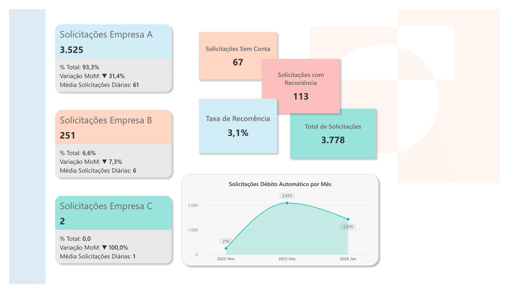

Análise estratégica de adesão ao débito automático

Dashboard analítico desenvolvido para monitoramento de solicitações de adesão ao débito automático.
O projeto analisou 3.778 solicitações distribuídas entre diferentes empresas do grupo.
O dataset contém 3.778 registros.